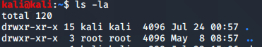

drwxr-xr-x
d:directory
rwx:read write execute
r-x :permisions with the grp
r-x:permisiions with the user
ls -la /tmp/ : has read write and execite all 3 permissions required for penetration testing
- stands for file
d stands for directory
created a file hello.txt:

thus has read write for us and read only for everiyone else
to read what is in this file

starting with '-' : then its a file
starting with 'd' :then its a directory
while doing pentesting actually upload files in tmp cz that is where u can execute those files coz tmp has all permissions
chmod 777 :for granting all access permissions

or even chmod +x gives the same tthing as above

created a newuser

passwd:john
(password written for future reference)
cat /etc/passwd:
op ki last line is

to see the the passwords
type
cat/etc/shadow
last line op:

its in hash format bt if u hgave access to shadow file then good chance of cracking the system too
to swtich users

u cant change password of kali from john


Thus u need john in the sudoers file